Filtrage PSY
Filtrage de périmètre et filtrage par variables dans les écrans PSY
1 Introduction
Le filtrage dans les écrans PMSISoft PSY comprend de 2 types de filtrage :
- filtrage de périmètre, via une première ligne de filtres, permettant de filtrer sur les finess géographique, les années, les mois, les UM, les formes d’activité, les numéros de secteur ou des dispostif intersectoriel, les modes légaux de soins et, spécifiquement en ambulatoire, les natures, lieux, modalités de réalisation des actes et les catégories professionnelles de l’intervenant
Le filtrage de périmètre est disponible en accès Standard.
- filtrage par variable, via une seconde ligne de filtres, permettant de composer des requêtes à partir d’une sélection de variables propres à chaque écran, une série de verbes et le paramétrage éventuel de valeurs.
Le filtrage par variable est disponible en accès Professionnel.
En hospitalisation (complète ou à temps partiel), on a les 2 lignes de filtrages suivantes :
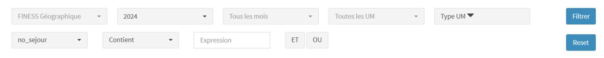
En ambulatoire, on a les 2 lignes de filtrages suivantes :
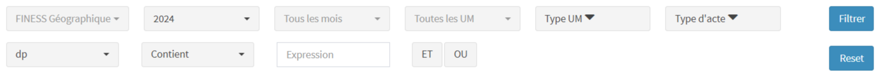
Quand au moins un filtrage a été sélectionné, le bouton Filtrer devient rouge
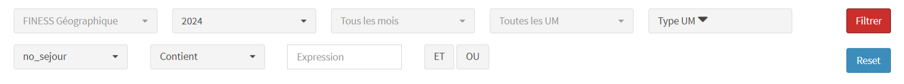
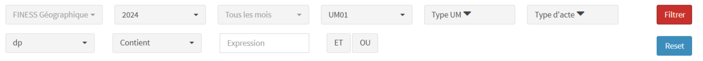
Quand on clique sur le bouton Reset, tous les filtrages sont supprimés et l’écran revient dans son état par défaut.
2 Filtrage en hospitalisation
2.1 FINESS géographique
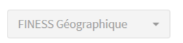
Filtre de périmètre
Par défaut, le filtre n’est pas actif : tous les FINESS géographique sont sélectionnés
Possibilité de sélectionner un ou plusieurs FINESS géographiques
2.2 Année
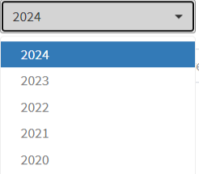
Filtre de périmètre
Par défaut, l’année en cours est sélectionnée
Années disponibles : de 2020 à 2024
2.3 Mois
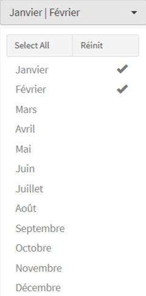
Filtre de périmètre
Par défaut, le filtre n’est pas actif : tous les mois sont sélectionnés
Possibilité de sélectionner plusieurs mois
2.4 UM
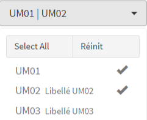
Filtre de périmètre
Par défaut, le filtre n’est pas actif : toutes les UM sont sélectionnées
Possibilité de sélectionner plusieurs UM
En accès Professionnel, possibilité d’importer une correspondance no_um-um_libelle permettant d’associer un libellé à chaque UM
2.5 Forme d’activité
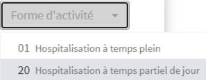
Filtre de périmètre
Accessible dans le méta-filtre de périmètre Type UM
Par défaut, le filtre n’est pas actif : toutes les formes d’activité sont sélectionnées
Possibilité de sélectionner plusieurs formes d’activité
Affichage des libellés associés aux codes des formes d’activité
2.6 No secteur
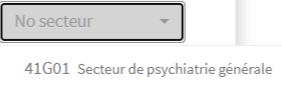
Filtre de périmètre
Accessible dans le méta-filtre de périmètre Type UM
Par défaut, le filtre n’est pas actif : tous les numéros de secteur ou de dispositif intersectoriel sont sélectionnés
Possibilité de sélectionner plusieurs formes numéros de secteur
Affichage des libellés associés aux numéros de secteur ou de dispositif intersectoriel
2.7 Mode légal de soins
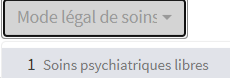
Filtre de périmètre
Accessible dans le méta-filtre de périmètre Type UM
Par défaut, le filtre n’est pas actif : tous les modes légaux de soins sont sélectionnés
Possibilité de sélectionner plusieurs modes légaux de soins
Affichage des libellés associés aux modes légaux de soins
2.8 Filtrage par variable
Un filtrage par variable comprend 3 informations : la variable choisie, le verbe à appliquer à la variable et une expression.
Avec ces 3 informations, on compose une “phrase” (sujet + verbe + complément) correspondant au filtrage voulu.
Prenons l’exemple de l’écran “Base des RPS” et considérons la sélection des RPS avec le DP dans la famille F32 “Episodes dépressifs”
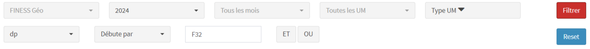
On a donc sélectionné la variable dp, on a ensuite appliqué le verbe Débute par puis on a codé l’expression F32. En cliquant sur le bouton Filtrer, PMSISoft PSY sélectionne donc les RPS avec un DP dont le code CIM-10 débute par F32.
Il est possible d’enrichir ce filtrage en ajoutant une seconde “phrase” liée à la première soit avec l’opérateur ET
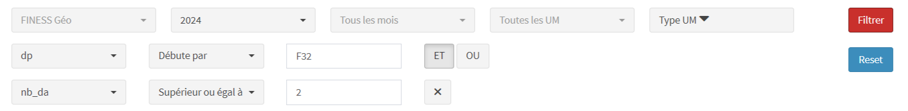
Dans cet exemple, on a sélectionné l’opérateur ET et ajouté la condition que le nombre de DA du RPS doit être supérieur ou égal à 2.
Soit avec l’opérateur OU
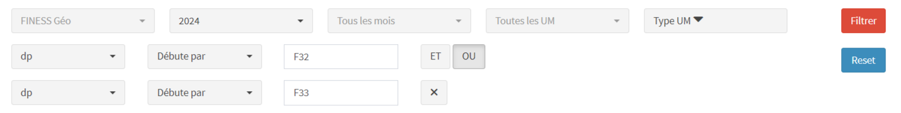
Dans cet exemple, on a sélectionné l’opérateur OU et ajouté la condition que le DP du RPS peut débuter aussi par F33 “Trouble dépressif récurrent”.
Choix des variables :
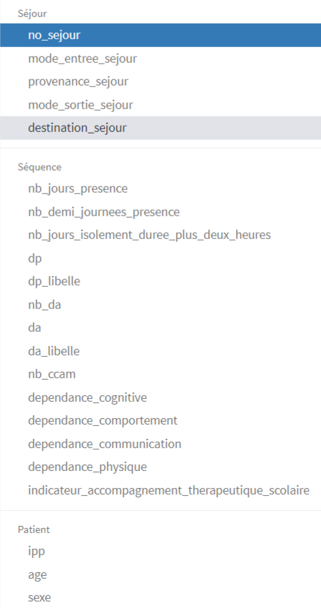
La liste des variables est fonction de l’écran. Ici on a les variables de l’écran “Base des RPS”
Les variables sont regroupées par famille cohérente. Ici “Séjour”, “Séquence” et “Patient”
Les variables sont nommées de manière standardisée.
Une variable relève d’un type parmi les 3 types : character, numérique, logique
A chaque type de variable correspond automatiquement une liste de verbes possibles.
Choix des verbes de type character
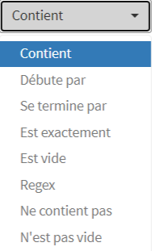
Quand une variable de type character est sélectionnée, PMSISoft affiche la liste des 8 verbes possibles associés à une telle variable.
Après la sélection du verbe, l’utilisateur saisie dans le champ Expression la chaîne de caractères voulue.
Choix des verbes de type numérique
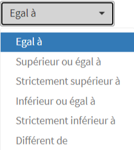
Quand une variable de type numérique est sélectionnée, PMSISoft affiche la liste des 6 verbes possibles associés à une telle variable.
Après la sélection du verbe, l’utilisateur saisie dans le champ Expression la valeur numérique voulue.
Choix des verbes de type logique
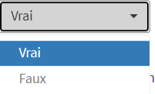
Quand une variable de type logique est sélectionnée, PMSISoft affiche la liste des 2 verbes possibles associés à une telle variable.
Pour ces variables de type logique, le champ Expression n’est pas pris en compte.
3 Filtrage en ambulatoire
3.1 FINESS géographique
Voir Section 2.1
3.2 Année
Voir Section 2.2
3.3 Mois
Voir Section 2.3
3.4 UM
Voir Section 2.4
3.5 Forme d’activité
Voir Section 2.5
3.6 No secteur
Voir Section 2.6
3.7 Mode légal de soins
Voir Section 2.7
3.8 Nature de l’acte
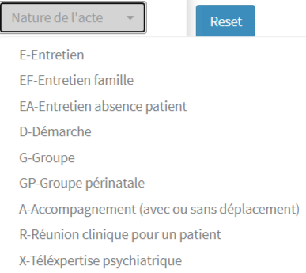
Filtre de périmètre
Accessible via le méta-filtre de périmètre Type d'acte
Par défaut, le filtre n’est pas actif : toutes les natures d’acte sont sélectionnées
Possibilité de sélectionner plusieurs natures d’acte
Affichage des libellés associés aux natures d’acte
3.9 Lieu de l’acte
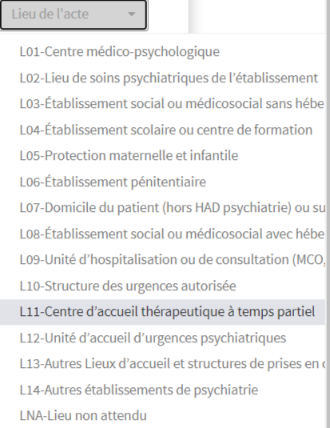
Filtre de périmètre
Accessible via le méta-filtre de périmètre Type d'acte
Par défaut, le filtre n’est pas actif : tous les lieux d’acte sont sélectionnés
Possibilité de sélectionner plusieurs lieux d’acte
Affichage des libellés associés aux lieux d’acte
3.10 Modalité de réalisation de l’acte
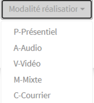
Filtre de périmètre
Accessible via le méta-filtre de périmètre Type d'acte
Par défaut, le filtre n’est pas actif : toutes les modalités de réalisation de l’acte sont sélectionnées
Possibilité de sélectionner plusieurs modalités de réalisation de l’acte
Affichage des libellés associés aux modalités de réalisation de l’acte
3.11 Catégorie professionnelle de l’intervenant
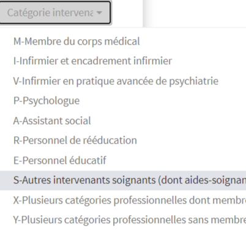
Filtre de périmètre
Accessible via le méta-filtre de périmètre Type d'acte
Par défaut, le filtre n’est pas actif : toutes les catégories professionnelles de l’intervenant sont sélectionnées
Possibilité de sélectionner plusieurs catégories professionnelles de l’intervenant
Affichage des libellés associés aux catégories professionnelles de l’intervenant
3.12 Filtrage par variable
Un filtrage par variable comprend 3 informations : la variable choisie, le verbe à appliquer à la variable et une expression.
Avec ces 3 informations, on compose une “phrase” (sujet + verbe + complément) correspondant au filtrage voulu.
Prenons l’exemple de l’écran “Base des RAA” et considérons la sélection des RAA avec le DP dans la famille F25 “Troubles schizo-affectifs”
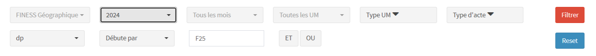
On a donc sélectionné la variable dp, on a ensuite appliqué le verbe Débute par puis on a codé l’expression F25. En cliquant sur le bouton Filtrer, PMSISoft PSY sélectionne donc les RPS avec un DP dont le code CIM-10 débute par F25.
Il est possible d’enrichir ce filtrage en ajoutant une seconde “phrase” liée à la première soit avec l’opérateur ET
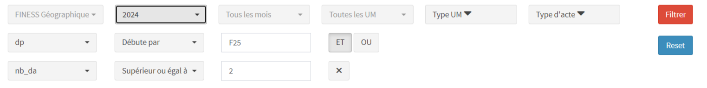
Dans cet exemple, on a sélectionné l’opérateur ET et ajouté la condition que le nombre de DA du RAA doit être supérieur ou égal à 2.
Soit avec l’opérateur OU
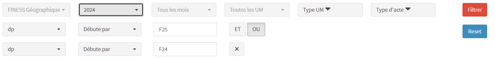
Dans cet exemple, on a sélectionné l’opérateur OU et ajouté la condition que le DP du RPS peut débuter aussi par F24 “Trouble délirant induit”.
Choix des variables :
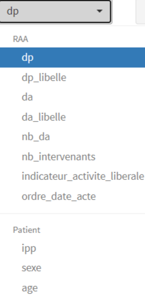
La liste des variables est fonction de l’écran. Ici on a les variables de l’écran “Base des RAA”
Les variables sont regroupées par famille cohérente. Ici “RAA” et “Patient”
Les variables sont nommées de manière standardisée.
Une variable relève d’un type parmi les 3 types : character, numérique, logique
A chaque type de variable correspond automatiquement une liste de verbes possibles.
Choix des verbes de type character
Quand une variable de type character est sélectionnée, PMSISoft affiche la liste des 8 verbes possibles associés à une telle variable.
Après la sélection du verbe, l’utilisateur saisie dans le champ Expression la chaîne de caractères voulue.
Choix des verbes de type numérique
Quand une variable de type numérique est sélectionnée, PMSISoft affiche la liste des 6 verbes possibles associés à une telle variable.
Après la sélection du verbe, l’utilisateur saisie dans le champ Expression la valeur numérique voulue.
Choix des verbes de type logique
Quand une variable de type logique est sélectionnée, PMSISoft affiche la liste des 2 verbes possibles associés à une telle variable.
Pour ces variables de type logique, le champ Expression n’est pas pris en compte.